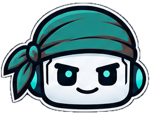

Drop to swap

{{ pc.fvBadge }}
{{ pc.fvAdd }}{{ pc.fvDel }}
Create PR
Commit…
{{ l.n }}{{ tk.t }}
Needs you
{{ pc.fvPh }}
What should we work on?
{{ pc.nfListTitle }}
No projects match. Paste a full path, or use Browse…
{{ pc.nfSyncText }}
↓{{ pc.nfBehindN }}{{ pc.nfBehindText }}
Switch to
{{ m.text }}
{{ m.text }}
{{ m.text }}
↳{{ m.name }}{{ m.text }}
{{ m.title }}{{ m.text }}
{{ m.text }}
Needs you
{{ pc.ask.q }}
StoppedCodex exited with 2 failing tests.
Restart
{{ pc.probG }}
{{ pc.probT }}{{ pc.probD }}
PERMISSIONS{{ pc.mpAgent }}
⇧Tab cycles modes while typing
Effort
{{ pc.trayProj }}
This chat works on